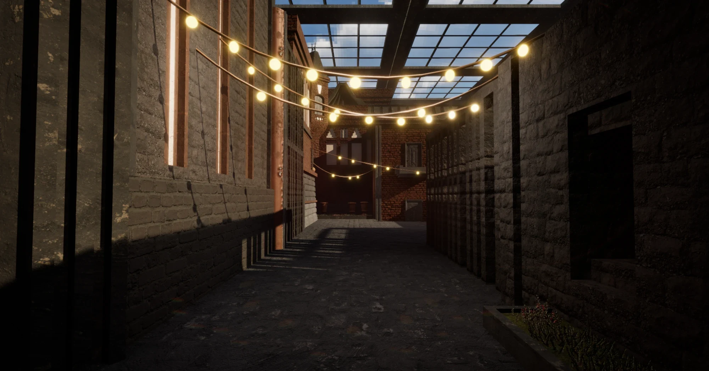
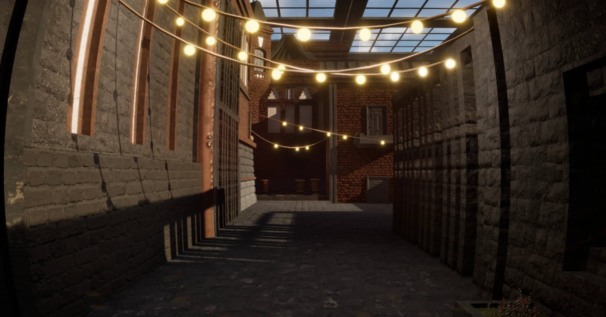
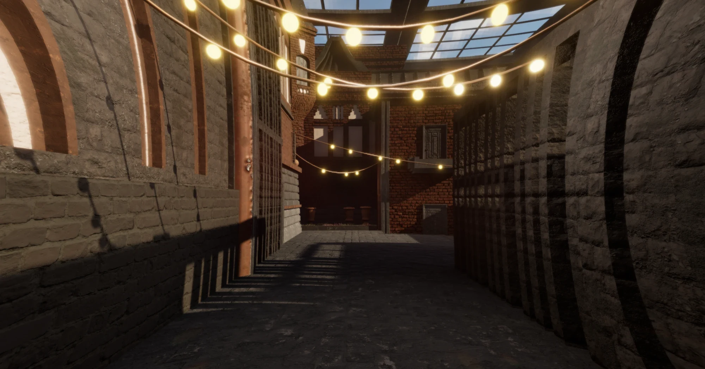

Effects
Lens distortion
Some lenses bend straight lines. Wide-angle lenses push the middle of the image outward so lines bow out (barrel distortion). Telephoto lenses do the opposite and lines bow inward toward the middle (pincushion distortion). It is good for effects like a drunk camera, a fisheye look, bodycam or a scope.
HLSLens has both, you can use one or both at the same time.
- Where to find it
- Lens Distortion on the volume, in the Barrel Distortion and Pincushion Distortion groups
- Default
- Both off (intensity 0)
- Cost
- Low. When both intensities are 0 the pass doesn't run at all.
Barrel distortion
| Setting | What it does | Default | Slider | Typed |
|---|---|---|---|---|
| Barrel Intensity | Strength of the distortion. 0 turns it off. |
0 | 0 to 0.5 | 0 to 5 |
| Barrel Radius | How big the distorted area is. Smaller values keep the effect closer to the center. Very large values give some strange, interesting results. | 2.0 | 0 to 0.7 | 0 to 50 |
| Barrel Falloff | How quickly the distortion ramps up. Higher gives a sharper transition. | 2.0 | 0 to 5 | 0 to 5 |


Pincushion distortion
| Setting | What it does | Default | Slider | Typed |
|---|---|---|---|---|
| Pincushion Intensity | Negative values give pincushion distortion, the edges bow inward. Positive values do the reverse and bow the image outward. 0 turns it off. |
0 | −2 to 2 | −2 to 5 |
| Pincushion Radius | How big the distorted area is. Smaller values affect a smaller area. | 0.85 | −0.5 to 2 | −0.5 to 2 |
| Pincushion Falloff | How quickly the distortion ramps up. Higher gives a sharper transition. | 1.8 | 0 to 3 | 0 to 3 |

How the edges are handled
Distorting the image pulls pixels in from outside the screen, where there's nothing to show. To avoid black or smeared borders, HLSLens zooms in a little as the intensity goes up. So strong distortion also crops the edges of the frame slightly, and the camera feels a bit narrower.
Both effects are corrected for the screen's aspect ratio, so the distortion stays round on wide screens instead of turning oval.
When you use both, barrel distortion is applied first and pincushion second.
Radius and falloff together
Intensity is how much the image bends. Radius and Falloff decide where. Radius sets how far from the center the distortion reaches and Falloff sets how it's spread inside that area.
With a low Falloff the bending is spread smoothly over the whole area, like a real lens, but it's also gentler. With a high Falloff the middle of the image is magnified and its lines stay straight, the bending mainly happens in a ring close to the Radius.
Animating it
Every distortion setting can be animated, in Sequencer, in a Blueprint timeline or by blending between volumes. A short pulse of Barrel Intensity on a big impact is an easy way to use it during gameplay for example.